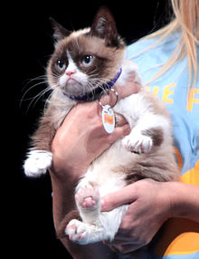

 Grumpy Cat
Tadar Sauce ( born April 4, 2012 ) commonly know as Grumpy Cat is a cat Internet and media personality and actress. She is known for her permanently "grumpy" facial appearance, which is caused by an underbite and feline dwarfism.She came to to prominence when a photograph of her was posted on social news website Reddit by Bryan Bundesen, the brother of her owner Tabatha, in September 2012, and lolcats and parodies created from the photograph by Reddit users went viral. She is the subject of a popular internet meme in which negative lolcats (such as "I Had Fun Once... It Was Awful") are made from photographs of her.